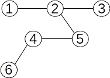

Următoarele propoziții sunt adevărate:
Un arbore cu n vârfuri are n-1 muchii.
Un arbore este un graf conex și minimal cu această proprietate; dacă s-ar mai elimina o muchie, graful nu ar mai fi conex.
Un arbore este un graf aciclic și maximal cu această proprietate; dacă s-ar mai adăuga o muchie, s-ar obține un ciclu.
Între oricare două vârfuri ale unui arbore există un lanț elementar unic.
Se numește ascendent al lui x orice nod y, diferit de x, aflat pe lanțul de la rădăcină la x;
rădăcina nu are ascendenți;
rădăcina este ascendent pentru toate nodurile din arbore;
dacă y este ascendent al lui x și există muchia (y,x), atunci y se numește ascendent direct al lui x sau tatăl lui x;
rădăcina este singurul nod din arbore care nu are tată;
un nod y este descendent al nodului x, diferit de y, dacă x aparține lanțului de la r la y;
dacă în plus există muchia (x,y), atunci y este descendent direct sau fiu al lui x;
un nod care nu are niciun descendent se numește frunză;
două noduri care au același tată se numesc frați;
lungimea unui lanț de la rădăcina arborelui la un nod x reprezintă nivelul sau adâncimea nodului x;
lungimea maximă a unui lanț de la rădăcină la un nod al arborelui reprezintă înălțimea arborelui;
un nod al arborelui împreună cu toți descendenții săi formează un subarbore;
Propoziții și teoreme:
Fie un arbore G=(V,E), unde V e mulțimea nodurilor, iar E cea a muchiilor. Următoarele afirmații sunt echivalente:
G este un graf conex minimal („minimal” se numește proprietatea unui arbore, că dacă i se elimină orice muchie, se obține un graf neconex).
G este un graf fără cicluri maximal („maximal” se numește proprietatea unui arbore,
că dacă i se adaugă orice muchie, se obține un graf care are măcar un ciclu, și deci nu e arbore).
Un arbore cu n ≥ 2 vârfuri conține cel puțin două vârfuri terminale.
Orice arbore cu n vârfuri are n-1 muchii.
